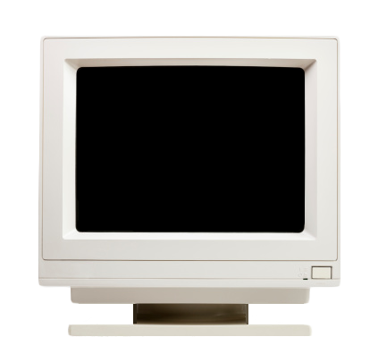
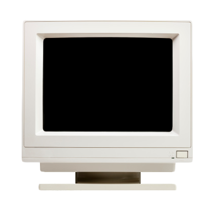

INSTALLATION
How to install UNIX
In the following video we will briefly explain the installation
process for UNIX. Watch on your own risk!

In the following video we will briefly explain the installation
process for UNIX. Watch on your own risk!
